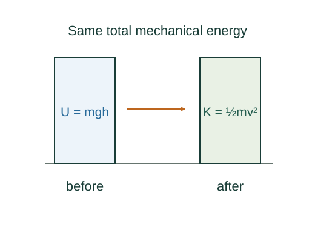

When is mechanical energy conserved?
Mechanical energy is constant when all the work being tracked is represented by conservative potential energies. Other interactions transfer energy into or out of that mechanical account.
What the symbols mean
K: kinetic energy; U: sum of included conservative potentials; Wnonconservative: work not already included through U.
When this applies
Apply the particle work–energy theorem consistently. For extended systems, include rotation, deformation, internal energy and boundary transfers as needed.
Developing the argument

Start with total work
The net work changes kinetic energy. Separate the force contributions into conservative forces and the remaining forces.
A closer lookDerive the work–energy theorem ↗Replace conservative work by a potential change
A conservative contribution is the negative change of its potential. This is a bookkeeping substitution, so do not count that same work again on the right.
Collect the mechanical terms
Move ΔU to the left. With no remaining work, the initial and final sums must be equal.
Understand frictional energy transfer
For a block sliding over a fixed surface, kinetic friction does negative work on the block. In the larger block-plus-surface system that mechanical energy typically becomes thermal energy.
A worked example
A body released from rest 2.0 m above a chosen zero level has bottom speed √(2gh) ≈ 6.26 m/s if losses and rotation are negligible.
Derivation behind this calculation ↗A point to keep straight
Failure of mechanical-energy conservation does not mean failure of total-energy conservation.
Check the assumptions and derivation ↗